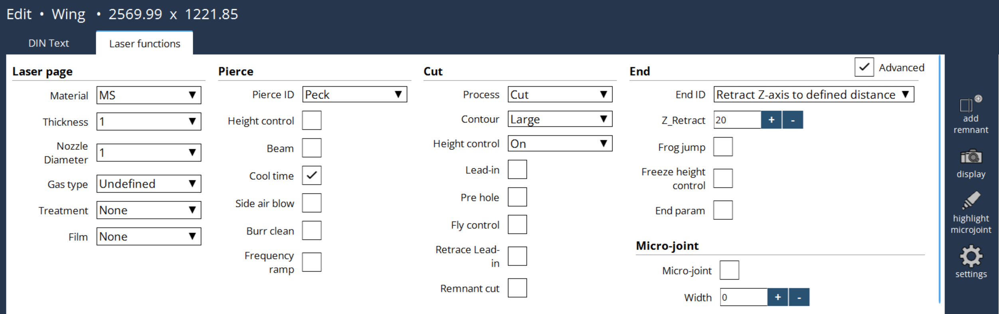

Editer la technologie laser
Généralités
Cette option permet à l’opérateur de répondre à et de résoudre tout problème pouvant survenir sur la machine.

Page laser
L’utilisateur peut sélectionner la page laser selon les exigences des fonctions laser. De même, il peut la modifier manuellement dans la commande texte DIN G253. Les modifications apportées sont appliquées à la fois dans le texte DIN et dans les fonctions laser.
-
Matière : Indique le type de matière.
-
Epaisseur : Définit l’épaisseur de la matière.
-
Diamètre de buse : Définit le diamètre de la buse utilisée pour la coupe.
-
Type de gaz : Détermine le gaz d’assistance utilisé dans le processus de coupe.
-
Traitement : Désigne tout pré-usinage ou réusinage appliqué à la matière.
-
Film : Indique si un film de protection est présent sur la surface de la matière, ce qui peut affecter les paramètres de coupe.
Perçage
L’utilisateur peut sélectionner le type de perçage en fonction de ses préférences.
-
Commande de la hauteur : Elle commande le processus de réglage de la distance pendant le perçage. Généralement, après le positionnement à la distance d’écartement de perçage, la commande de hauteur sera désactivée. Cela évitera à la tête de coupe de s’agiter en raison de projections de matière pendant le perçage et, par conséquent, améliorera la qualité des perçages. Il est possible de maintenir le commande de hauteur active pendant un perçage de tôle mince ou d’autres conditions spéciales, pour améliorer le temps d’usinage.
-
Faisceau : Commande l’activation et la désactivation du faisceau lors du passage des paramètres de perçage aux paramètres de coupe. Généralement, une fois le perçage terminé, le faisceau est désactivé et les paramètres laser sont mis à jour aux valeurs de coupe, puis le faisceau est activé et commence à couper.
-
Temps de refroidissement : Commande l’activation et la désactivation des paramètres de temps de refroidissement dans le perçage. A la fin de chaque étape/phase de perçage, un temps de refroidissement est défini dans les paramètres. Pendant ce temps, le faisceau sera désactivé pour refroidir la matière, puis il s’active à nouveau, ce qui évite la surchauffe de la matière lors du perçage.
-
Soufflage transversal : Commande l’activation et la désactivation de l’électrovanne de soufflage transversal pour un laps de temps défini dans les paramètres de perçage. Des puissances laser élevées sont utilisées pour percer les matières épaisses et à la fin du perçage, de l’air à haute pression est soufflé par les côtés pour refroidir la matière, éliminer les projections, etc., de sorte que la coupe ne soit pas affectée.
-
Nettoyage de bavure : Commande l’appel du sous-programme de nettoyage des bavures à la fin du perçage. Une fois le perçage terminé, de la lave fondue se forme par-dessus certaines matière, telle une montagne. Pour éliminer cette matière fondue, un sous-programme est appelé et déplace la tête avec une pression élevée sur la lave pour la nettoyer. Le type de gaz et la pression sont définis dans les réglages machine.
-
Rampe de fréquence : Commande la rampe de fréquence lors du perçage. Si la méthode de perçage sélectionnée est un perçage varié par Puissance/Fonction/Fente (MP=22 à 27), alors l’activation de ce bit augmentera également la fréquence. Ceci n’est pas valide avec d’autres de méthodes de perçage.
Couper
L’utilisateur peut couper en fonction de ses préférences (en modifiant le processus, le type de contour). En fonction du type de contour, le dessin sera affiché dans la couleur mentionnée ci-dessous :
Petit contour = Orange
Contour moyen = Rose
Grand contour = Vert
Marquage = Marron
-
Introduction : Commande l’activation et la désactivation de la fonction Introduction dans l’API. Dans le programme CN, la longueur d’introduction est définie pour chaque coupe de contour et peut être ajustée via le paramètre Longueur d’ajustement de l’introduction dans la base de données. Si elle est activée, la fonction utilisera les paramètres de départ d’un contour particulier et une fois que la distance est atteinte, elle passe aux paramètres contours.
-
Pré-perçage : Commande l’appel du sous-programme de pré-perçage avant le début de la coupe réelle. Si elle est activée, cette fonction utilisera les paramètres de pré-perçage disponibles dans la base de données. Une fois le pré-perçage terminé, les paramètres sont basculés sur les valeurs de contour.
-
Commande de vol : Commande le masquage des sorties de l’API à la CN pour le processus de vol.
-
Retracer l’introduction : Commande la fonction de retraçage de la coupe d’introduction. Si le bit d’introduction est actif et que la coupe d’introduction est terminée, alors la tête retrace la même longueur de chemin d’introduction avec le faisceau éteint, mais avec la commande de hauteur active. Encore une fois, la coupe est lancée avec des paramètres contours, ainsi, la longueur d’introduction est découpée par deux ensembles de paramètres, pour une meilleure largeur de la fente de coupe et un meilleur nettoyage des bavures.
-
Coupe résiduelle : Commande la coupe résiduelle de la tôle au niveaux des bords. Si le bit de coupe résiduelle est actif, alors la commande M14 n’allume pas le faisceau laser, en dehors de cela, d’autres fonctions telles que le positionnement en hauteur, l’alimentation en gaz, etc., seront complétées.
Extrémité laser
Les extrémités laser sont basées sur la distance de dégagement de l’axe Z ainsi que sur le saut de grenouille, le gel de commande de hauteur, les paramètres de fin, etc.
-
Déplacement de dégagement de Z : L’utilisateur peut spécifier la distance de dégagement de l’axe Z en fin de coupe.
-
Saut de grenouille : Commande l’activation et la désactivation de la fonction Saut de grenouille pour l’axe Z. Généralement, une fois la coupe terminée, l’axe Z est d’abord déplacé en position de déplacement libre, puis les axes X et Y sont positionnés au prochain point de fonctionnement dynamique. Lorsque le saut de grenouille est activé, l’axe Z commence à se déplacer en position de déplacement libre, au même moment, les axes X et Y commencent également à se déplacer. Si l’axe Z n’atteint pas la position de déplacement libre mais que les axes X et Y se déplacent complètement à la position cible, alors le déplacement libre de l’axe Z est interrompu et la position d’écartement est activée. Par conséquent, les positions des axes X, Y et Z sont prêtes pour la prochaine opération. De cette façon, le temps d’usinage est amélioré.
-
Gel de la commande de hauteur : Commande le gel de la commande de hauteur (CH) en fin de coupe. La distance avant laquelle le gel doit être activé est définie dans les paramètre de base de données. Si la tâche est annulée pendant la découpe ou en fin de coupe, la tête risque de s’abaisser. Pour éviter cette situation, le mouvement de la tête est gelé en fin de coupe.
-
Param. de fin : Commande l’activation et la désactivation de l’utilisation des "Paramètres de fin" en fin de coupe. La distance avant laquelle les paramètres de fin doivent être activés est définie dans les paramètre de base de données. En fin de coupe, il est possible de passer à différents paramètres à la volée pour une meilleure finition de la tâche en raison de la décélération des axes.
-
Faisceau : Arrête le faisceau avant une certaine distance de la fin de coupe, afin de permettre une microjonction.
Microjonction
Petite section non découpée pour maintenir les pièces attachées à la tôle, les empêchant de bouger.
-
Largeur de microjonction : L’utilisateur peut sélectionner les contours similaires et activer une microjonction avec une plage de valeurs de 0 à 3. La valeur standard est +0,7 mm.
Petite section non découpée pour maintenir les pièces attachées à la tôle, les empêchant de bouger.
-
Largeur de microjonction : L’utilisateur peut sélectionner les contours similaires et activer une microjonction avec une plage de valeurs de 0 à 3. La valeur standard est +0,7 mm.